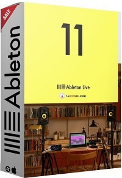

============================

Stats
Title: Ableton Live 11 Suite 11.2.5 U2B macOS [KolomPC]
Category: Apps
Type: Mac
Language: English
Total size: 2.7 GB
Uploaded By: manulik
============================
Info:
!!! Remember I don't own or edit anything on links that might be on this torrent!!!

Ableton Live 11 Suite 11.2.5 U2B macOS
Live is fast, fluid and flexible software for music creation and performance. It comes with effects, instruments, sounds and all kinds of creative features—everything you need to make any kind of music. Create in a traditional linear arrangement, or improvise without the constraints of a timeline in Live’s Session View. Move freely between musical elements and play with ideas, without stopping the music and without breaking your flow.
All new features and updates in Live 11
Comping
Live organizes multiple passes of an audio or MIDI performance into individual takes. Combine the best of many takes or find creative new combinations.
Linked-track editing
Link two or more audio or MIDI tracks to edit or comp their content simultaneously.
MPE compatibility
Add bends, slides and pressure for each individual note in a chord. Add subtle expression variations, morph between chords and create evolving sonic textures.
Expression View
Add and edit pitch, timbre and pressure variations of individual notes directly in a new tab in the Clip Detail View.
MPE-capable native devices
Wavetable, Sampler and Arpeggiator now support MPE. Use Push’s pad pressure to control parameters per note.
Hybrid Reverb
Combines convolution and algorithmic reverbs, making it possible to create any space, from accurate real-life environments to those that defy physical reality.
Spectral Resonator
Breaks the spectrum of an incoming audio signal into partials, then stretches, shifts and blurs the result by a frequency or a note in subtle or radical ways. Play it like an instrument with MIDI.
Spectral Time
Transforms sound into partials and feeds them into a frequency-based delay, resulting in metallic echoes, frequency-shifted and reverb-like effects. The Freeze function captures and holds audio.
Inspired by Nature
Six playful instruments and effects that use natural and physical processes as their inspiration. Created in collaboration with Dillon Bastan.
and more...
Supported Operation System
• macOS 10.14 or later
• Apple Silicon or Intel Core processor
============================
Stats
Title: Ableton Live 11 Suite 11.2.5 U2B macOS [KolomPC]
Category: Apps
Type: Mac
Language: English
Total size: 2.7 GB
Uploaded By: manulik
============================
Info:
!!! Remember I don't own or edit anything on links that might be on this torrent!!!

Ableton Live 11 Suite 11.2.5 U2B macOS Live is fast, fluid and flexible software for music creation and performance. It comes with effects, instruments, sounds and all kinds of creative features—everything you need to make any kind of music. Create in a traditional linear arrangement, or improvise without the constraints of a timeline in Live’s Session View. Move freely between musical elements and play with ideas, without stopping the music and without breaking your flow. All new features and updates in Live 11 Comping Live organizes multiple passes of an audio or MIDI performance into individual takes. Combine the best of many takes or find creative new combinations. Linked-track editing Link two or more audio or MIDI tracks to edit or comp their content simultaneously. MPE compatibility Add bends, slides and pressure for each individual note in a chord. Add subtle expression variations, morph between chords and create evolving sonic textures. Expression View Add and edit pitch, timbre and pressure variations of individual notes directly in a new tab in the Clip Detail View. MPE-capable native devices Wavetable, Sampler and Arpeggiator now support MPE. Use Push’s pad pressure to control parameters per note. Hybrid Reverb Combines convolution and algorithmic reverbs, making it possible to create any space, from accurate real-life environments to those that defy physical reality. Spectral Resonator Breaks the spectrum of an incoming audio signal into partials, then stretches, shifts and blurs the result by a frequency or a note in subtle or radical ways. Play it like an instrument with MIDI. Spectral Time Transforms sound into partials and feeds them into a frequency-based delay, resulting in metallic echoes, frequency-shifted and reverb-like effects. The Freeze function captures and holds audio. Inspired by Nature Six playful instruments and effects that use natural and physical processes as their inspiration. Created in collaboration with Dillon Bastan. and more... Supported Operation System • macOS 10.14 or later • Apple Silicon or Intel Core processor